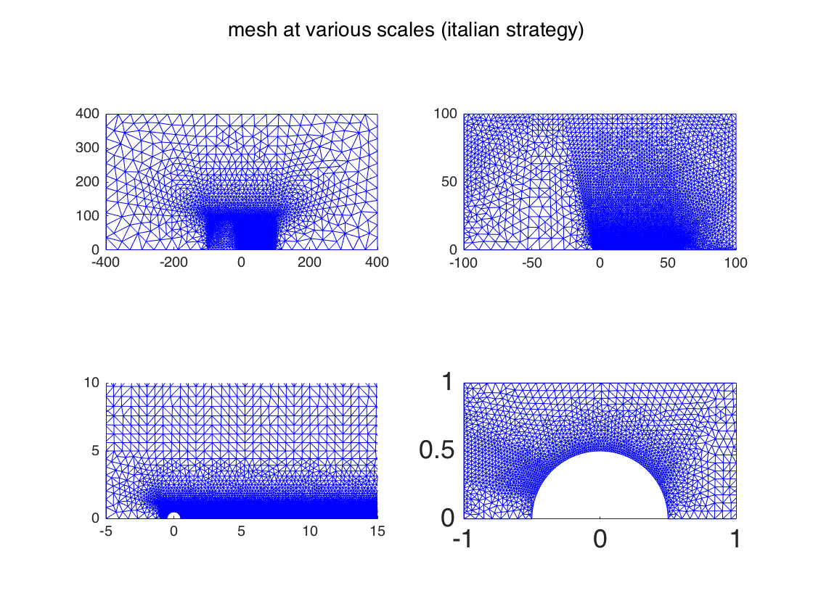
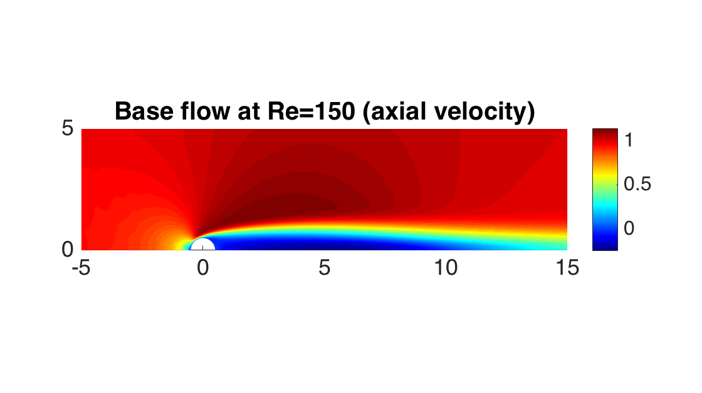
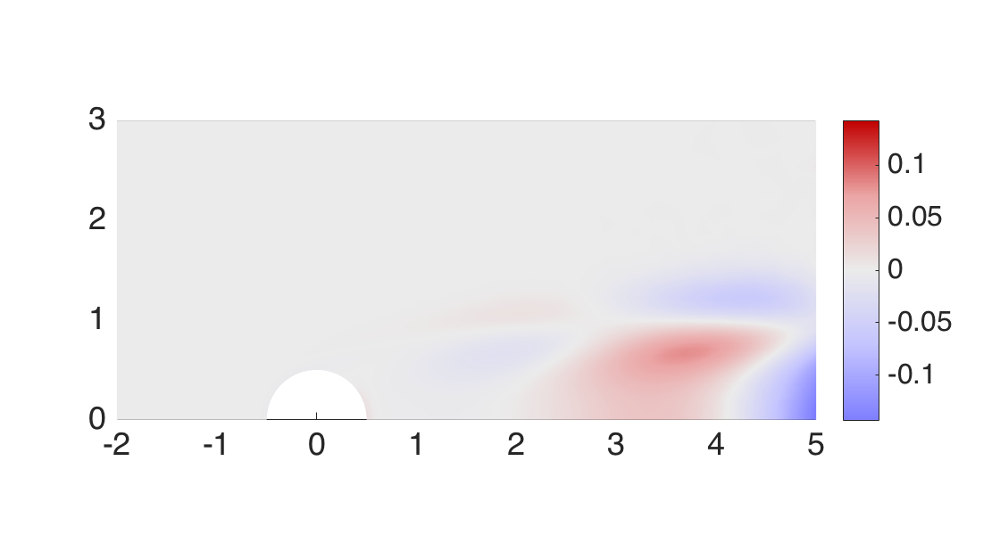
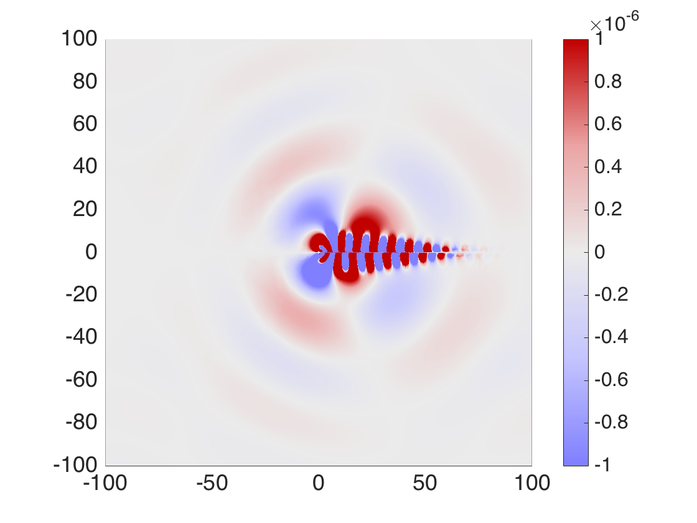
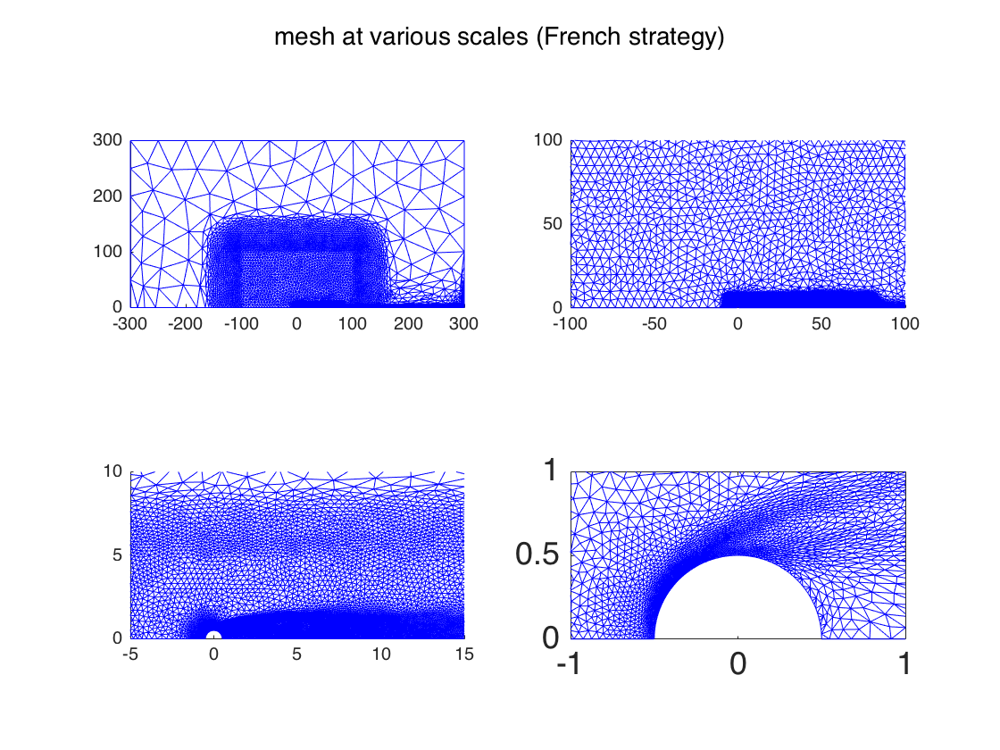
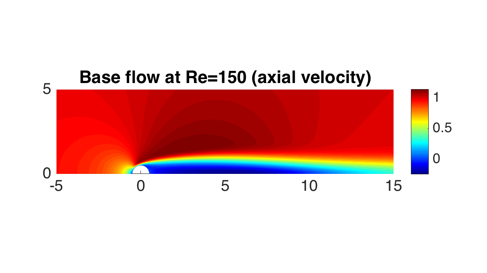
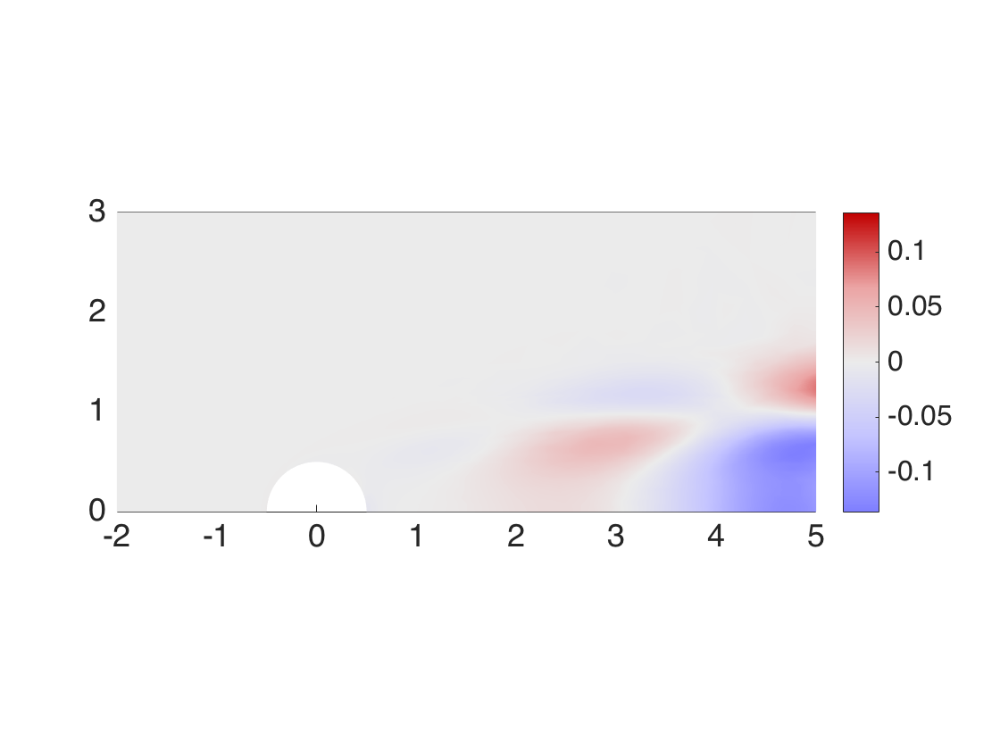
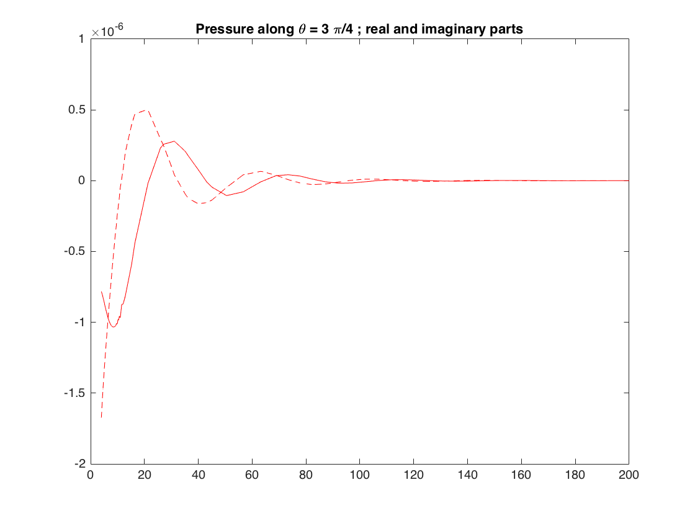

Contents
- CHAPTER 0 : set the global variables needed by the drivers
- Chapter 1 : Italian-style mesh (multiple imbricated zones)
- 1A : mesh creation
- 1B. Computation of a BF for Re = 150, Ma = 0.2
- Chapter 1C : Compute eigenmode
- Chapter 2 : New adapted mesh using flow structures and "masks".
- 2.A : mesh generation
- Chapter 2B : plot the mesh and BF
- 2.C : compute and plot eigenmode
- 2.D : Extract P along the the direction theta = (3*pi/4)
!l
CHAPTER 0 : set the global variables needed by the drivers
clear all; close all; run('../../../SOURCES_MATLAB/SF_Start.m'); figureformat='png'; AspectRatio = 0.56; % for figures tinit = tic; verbosity=0; Ma = 0.2; Re = 150; % NB the drivers may produce warning messages such as "rm: ./WORK/*.txt: No such file or directory" % don't mind them, this should disapear in future evolutions of StabFem
/bin/bash: l: command not found
Chapter 1 : Italian-style mesh (multiple imbricated zones)
1A : mesh creation
% Mesh in the style of that used by Fani et al, but on half-domain % parameters for mesh creation ; Italian method xinfm=-100.; xinfv=100.; yinf=100.;% Outer Domain x1m=-1; x1v=30.; y1=1;% Inner domain x2m=-5.;x2v=60.;y2=5;% Middle domain ls=300.0; % Sponge extension % Refinement parameters n=1.8; % Vertical density of the outer domain ncil=60; % Refinement density around the cylinder n1=30; % Density in the inner domain n2=3; % Density in the middle domain ns=.5; % Density in the outer domain nsponge=.05; % density in the sponge region ParamsForSponge = [xinfm,xinfv,yinf,x1m,x1v,y1,x2m,x2v,y2,ls,n,ncil,n1,n2,ns,nsponge]; mesh = SF_Mesh('Mesh_HalfDomain_WITHSUBZONES.edp','Params',ParamsForSponge); % Number of vertices in this mesh : mesh.np bf=SF_BaseFlow(mesh,'Re',1,'Mach',0.2); bf=SF_BaseFlow(bf,'Re',60,'Mach',0.2);
ans =
21112
Plot this mesh
figure; subplot(2,2,1);SF_Plot(mesh); subplot(2,2,2);SF_Plot(mesh,'xlim',[-100 100],'ylim',[0 100]); subplot(2,2,3);SF_Plot(mesh,'xlim',[-5 15],'ylim',[0 10]); subplot(2,2,4);SF_Plot(mesh,'xlim',[-1 1],'ylim',[0 1]); suptitle('mesh at various scales (italian strategy)'); pause(1); box on; set(gca,'FontSize', 18); saveas(gca,'Cylinder_Compressible_ItalianMesh',figureformat); pause(0.1);
1B. Computation of a BF for Re = 150, Ma = 0.2
bf=SF_BaseFlow(bf,'Re',150,'Mach',0.2); figure(); SF_Plot(bf,'ux','xlim',[-5 15],'ylim',[0 5]); title('Base flow at Re=150 (axial velocity)'); box on; pos = get(gcf,'Position'); pos(4)=pos(3)*AspectRatio;set(gcf,'Position',pos); % resize aspect ratio set(gca,'FontSize', 18); saveas(gca,'Cylinder_BaseFlowRe60Ma02',figureformat); pause(0.1);
Chapter 1C : Compute eigenmode
%Plot eigenmode (figure 6 of Fani et al) [ev,emD] = SF_Stability(bf,'shift',0.152 + 0.642i,'nev',1,'type','D','sym','A'); figure; SF_Plot(emD,'vort1','xlim',[-2 5],'ylim',[0 3],'colorrange','cropcentered','colormap','redblue'); box on; pos = get(gcf,'Position'); pos(4)=pos(3)*AspectRatio;set(gcf,'Position',pos); % resize aspect ratio set(gca,'FontSize', 18); saveas(gca,'Cylinder_EigenmodeRe60Ma02_vort',figureformat); pause(0.1); % figure; SF_Plot(emD,'p1','xlim',[-100 100],'ylim',[-100 100],'colorrange',[-1e-6,1e-6],'colormap','redblue'); hold on; SF_Plot(emD,'p1.im','xlim',[-100 100],'ylim',[-100 100],'colorrange',[-1e-6,1e-6],'colormap','redblue','symmetry','XM'); box on; set(gca,'FontSize', 18); saveas(gca,'Cylinder_EigenmodeRe60Ma02_p',figureformat); pause(0.1);
# Stability calculation completed, eigenvalue = 0.15273+0.64482i ; converged in 3 iterations 
Chapter 2 : New adapted mesh using flow structures and "masks".
2.A : mesh generation
% First create an initial mesh in the simplest way mesh = SF_Mesh('Mesh_HalfDomain.edp','Params',[-100,100,100,200,.1,60]); bf=SF_BaseFlow(mesh,'Re',1,'Mach',0.2); % First adaptation with only one mask and BF (do it twice) Mask = SF_Launch('AdaptationMask.edp','Type','rectangle','Params',[-100 100 -100 100 4],'Mesh',bf.mesh,'DataFile','Mask.ff2m') bf = SF_Adapt(bf,Mask,'Hmax',50); Mask = SF_Launch('AdaptationMask.edp','Type','rectangle','Params',[-100 100 -100 100 4],'Mesh',bf.mesh,'DataFile','Mask.ff2m') bf = SF_Adapt(bf,Mask,'Hmax',50); % Raise the Re to 150 bf=SF_BaseFlow(bf,'Re',60,'Mach',0.2); bf=SF_BaseFlow(bf,'Re',150,'Mach',0.2); % Compute the eigenmode and two 'masks' % eigenmode [ev,emD] = SF_Stability(bf,'shift',0.152 + 0.642i,'nev',1,'type','D','sym','A'); % NB PROBLEM in type='A' mode % First 'mask' function to enforce Hmax = 4 on [-100,100]x[0,100] Mask = SF_Launch('AdaptationMask.edp','Type','rectangle','Params',[-100 100 -100 100 4],'Mesh',bf.mesh,'DataFile','Mask.ff2m') % NB don't mind the three next lines ; such filename manipulations will be % integrated automatically in the driver in due time ! mycp('WORK/Mask.txt','WORK/Mask1.txt'); mycp('WORK/Mask.ff2m','WORK/Mask1.ff2m'); Mask.filename = 'WORK/Mask1.txt'; % Second 'mask' function to enforce Hmax = .25 on [-2,10]x[0,3] Mask2 = SF_Launch('AdaptationMask.edp','Type','rectangle','Params',[-5 80 -5 5 .25],'Mesh',bf.mesh,'DataFile','Mask.ff2m') % mesh adaptation to bf, eigenmodes and the two masks ! bf = SF_Adapt(bf,emD,Mask,Mask2,'Hmax',50); % Number of vertices in this mesh : bf.mesh.np
Mask =
mesh: [1x1 struct]
filename: './WORK/Mask.txt'
DataDescription: 'Adaptation Mask'
datatype: 'MASK'
datastoragemode: 'CxP2P2'
Maskx: [3191x1 double]
Masky: [3191x1 double]
rm: ./WORK//MEANFLOWS/*: No such file or directory
rm: ./WORK/Eigenmode*: No such file or directory
Mask =
mesh: [1x1 struct]
filename: './WORK/Mask.txt'
DataDescription: 'Adaptation Mask'
datatype: 'MASK'
datastoragemode: 'CxP2P2'
Maskx: [4369x1 double]
Masky: [4369x1 double]
rm: ./WORK//BASEFLOWS/*: No such file or directory
rm: ./WORK//MEANFLOWS/*: No such file or directory
rm: ./WORK/Eigenmode*: No such file or directory
# Stability calculation completed, eigenvalue = 0.13871+0.63824i ; converged in 5 iterations
Mask =
mesh: [1x1 struct]
filename: './WORK/Mask.txt'
DataDescription: 'Adaptation Mask'
datatype: 'MASK'
datastoragemode: 'CxP2P2'
Maskx: [4791x1 double]
Masky: [4791x1 double]
Mask2 =
mesh: [1x1 struct]
filename: './WORK/Mask.txt'
DataDescription: 'Adaptation Mask'
datatype: 'MASK'
datastoragemode: 'CxP2P2'
Maskx: [4791x1 double]
Masky: [4791x1 double]
rm: ./WORK//MEANFLOWS/*: No such file or directory
ans =
16329
Chapter 2B : plot the mesh and BF
figure; subplot(2,2,1);SF_Plot(bf.mesh,'xlim',[-300 300],'ylim',[0 300]); subplot(2,2,2);SF_Plot(bf.mesh,'xlim',[-100 100],'ylim',[0 100]); subplot(2,2,3);SF_Plot(bf.mesh,'xlim',[-5 15],'ylim',[0 10]); subplot(2,2,4);SF_Plot(bf.mesh,'xlim',[-1 1],'ylim',[0 1]); suptitle('mesh at various scales (French strategy)'); pause(1); box on; set(gca,'FontSize', 18); saveas(gca,'Cylinder_Compressible_FrenchMesh',figureformat); pause(0.1);
Plot base flow (figure 2 of Fani et al)
figure(); SF_Plot(bf,'ux','xlim',[-5 15],'ylim',[0 5]); title('Base flow at Re=150 (axial velocity)'); box on; pos = get(gcf,'Position'); pos(4)=pos(3)*AspectRatio;set(gcf,'Position',pos); % resize aspect ratio set(gca,'FontSize', 18); saveas(gca,'Cylinder_BaseFlowRe60Ma02',figureformat); pause(0.1);
2.C : compute and plot eigenmode
%Plot eigenmode (figure 6 of Fani et al) [ev,emD] = SF_Stability(bf,'shift',0.152 + 0.642i,'nev',1,'type','D','sym','A'); figure;SF_Plot(emD,'vort1','xlim',[-2 5],'ylim',[0 3],'colorrange','cropcentered','colormap','redblue'); box on; set(gca,'FontSize', 18); saveas(gca,'Cylinder_EigenmodeRe60Ma02_vort',figureformat); pause(0.1); % figure; SF_Plot(emD,'p1','xlim',[-100 100],'ylim',[-100 100],'colorrange',[-1e-6,1e-6],'colormap','redblue'); hold on; SF_Plot(emD,'p1.im','xlim',[-100 100],'ylim',[-100 100],'colorrange',[-1e-6,1e-6],'colormap','redblue','symmetry','XM'); box on; set(gca,'FontSize', 18); saveas(gca,'Cylinder_EigenmodeRe60Ma02_p',figureformat); pause(0.1);
# Stability calculation completed, eigenvalue = 0.15275+0.64492i ; converged in 4 iterations
2.D : Extract P along the the direction theta = (3*pi/4)
Rray= [4:.1:200]; Xray = Rray*cos(3*pi/4);Yray = Rray*sin(3*pi/4); Pray = SF_ExtractData(emD,'p1',Xray,Yray); figure;plot(Rray,real(Pray),'r-',Rray,imag(Pray),'r--') title('Pressure along \theta = 3 \pi/4 ; real and imaginary parts')